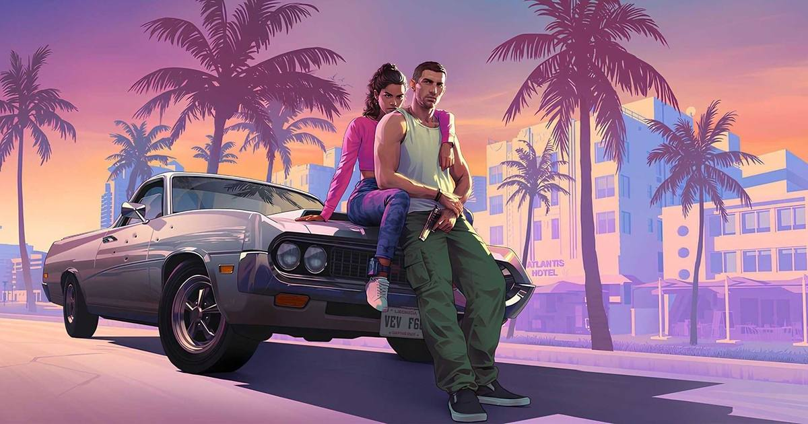

Rockstar shared a GTA 6 clip so real-looking that fans are arguing about whether it is the game at all
Rockstar shared a 15-second GTA 6 clip recreating a real Miami street scene in Leonida, and fans cannot agree whether they are watching gameplay, real life, or AI. The game launches November 19.

The clip
Six days before launch, Rockstar Games shared a 15-second GTA 6 clip that has the internet arguing about what it is actually looking at.
The clip started with Only in Dade, the Instagram account that posts unusual incidents from Miami-Dade County, and shows a street full of customized sports cars with people filming on their phones. Rockstar then shared it, recreating the same scene inside Leonida — the game's version of Florida — side by side with the real Miami footage the studio shot in October. The recreation is so close that viewers are debating whether they are watching actual gameplay, real-life video, or something AI-generated. Only in Dade described it as 100 percent gameplay footage, and Rockstar sharing it is the tell: this is the studio showing off its graphics, not passing off a fake video as real.
Look closely and the seams show, barely. The real clip has more people walking around; the game version has fewer pedestrians. There is also first-person footage in the comparison, which answers one open question — first-person view exists in the game for at least some of it — while leaving another open: whether the whole game can be played that way, or only while walking around and driving. November 19 is when that answer arrives.
The launch
The timing is deliberate. This is the final week of the longest marketing runway in gaming history, and Rockstar has moved from silence into a tight rollout: the 90-second launch trailer in October, pre-loading open since Tuesday, and now a clip that does not ask anyone to trust a claim about realism on faith — it shows the reference and the recreation together.
The game launches November 19 on PlayStation 5 and Xbox Series X|S, with no PC version announced. IShowSpeed has reportedly said he plans to travel to New Zealand to stream his first gameplay session at midnight local time on launch day, though that plan has not been officially confirmed. YouTube will run a 24-hour launch stream from midnight ET on November 19, with live gameplay and creator shows.
Source: Grand Theft Auto VI Launch Trailer — Rockstar Games on YouTube. The official launch trailer: Jason and Lucia, one week out from November 19.
Sources
• Rockstar Shows GTA 6 Instagram Gameplay Video With Miami Recreation (El Balad)
• GTA 6 Gets 20 Seconds Of New Gameplay, And Everyone Can't Believe How Real It Looks (Pure Xbox)
Gear up: Razer — mice, keyboards, headsets and laptops.